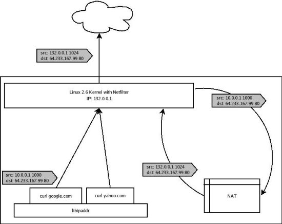
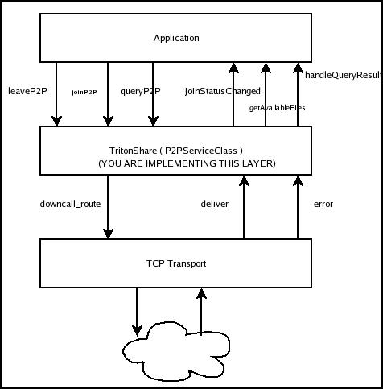

Assignments
Assignment 1: A Web Server
The goal of this project is to build a functional HTTP/1.0 server. This assignment will teach you the basics of distributed programming, client/server structures, and issues in building high performance servers. While the course lectures will focus on the concepts that enable network communication, it is also important to understand the structure of systems that make use of the global Internet.
This project should be done in teams of two.
Due Date: January 26, 5 pm
At a high level, a web server listens for connections on a socket (bound to a specific port on a host machine). Clients connect to this socket and use a simple text-based protocol to retrieve files from the server. For example, you might try the following command from a UNIX machine:
% telnet www.cs.ucsd.edu 80
GET index.html HTTP/1.0\n
\n
(type two carriage returns after the "GET" command). This will return to you (on the command line) the html representing the "front page" of the UCSD computer science web page.
One of the key things to keep in mind in building your web server is that the server is translating relative filenames (such as index.html ) to absolute filenames in a local filesystem. For example, you might decide to keep all the files for your server in ~student/cse222/server/files/ , which we call the root. When your server gets a request for index.html , it will prepend the root to the specified file and determine if the file exists, and if the proper permissions are set on the file (typically the file has to be world readable). If the file does not exist, a file not found error is returned. If a file is present but the proper permissions are not set, a permission denied error is returned. Otherwise, an HTTP OK message is returned along with the contents of a file. Provide simple server support for ".htaccess" files on a per-directory basis to limit the domains that are allowed access to a given directory. You only need to implement the "allow/deny from 000.000.000.000/all" syntax and rules should be applied in descending order. You should be able to allow/deny from both ip addresses as well as domain names.
You should also note that web servers typically translate "GET /" to "GET /index.html". That is, index.html is assumed to be the filename if no explicit filename is present. That is why the two URL's " http://www.cs.ucsd.edu " and " http://www.cs.ucsd.edu/index.html " return equivalent results.
When you type a URL into a web browser, it will retrieve the contents of the file. If the file is of type text/html , it will parse the html for embedded links (such as images) and then make separate connections to the web server to retrieve the embedded files. If a web page contains 4 images, a total of five separate connections will be made to the web server to retrieve the html and the four image files. Note that the previous discussion assumes the HTTP/1.0 protocol which is what you will be supporting in this first assignment.
Next, add simple HTTP/1.1 support to your web server, consisting of persistent connections and pipelining of client requests to your web browser. You will also need to add some heuristic to your web server to determine when it will close a "persistent" connection. That is, after the results of a single request are returned (e.g., index.html), the server should by default leave the connection open for some period of time, allowing the client to reuse that connection to make subsequent requests. This timeout needs to be configured in the server and ideally should be dynamic based on the number of other active connections the server is currently supporting. That is, if the server is idle, it can afford to leave the connection open for a relatively long period of time. If the server is busy, it may not be able to afford to have an idle connection sitting around (consuming kernel/thread resources) for very long.
For this assignment, you will need to support enough of the HTTP protocol to allow an existing web browser (netscape or IE) to connect to your web server and retrieve the contents of the UCSD CS front page from your server. Of course, this will require that you copy the appropriate files to your server's document directory. You wil not need to have any support for the php aspects of the page.
At a high level, your web server will be structured something like the following:
Forever loop:
Listen for connections
Accept new connection from incoming client
Parse HTTP/1.0 request
Ensure well-formed request (return error otherwise)
Determine if target file exists and if permissions are set properly (return error otherwise)
Transmit contents of file to connect (by performing reads on the file and writes on the socket)
Close the connection
You will have three main choices in how you structure your web server in the context of the above simple structure:
- A multi-threaded approach will spawn a new thread for each incoming connection. That is, once the server accepts a connection, it will spawn a thread to parse the request, transmit the file, etc.
- A multi-process approach (really only an option if you choose to do your development in C/C++) maintains a worker pool of active processes to hand requests off to from the main server. This approach is largely appropriate because of its portability (relative to assuming the presence of a given threads package across multiple hardware/software platform). It does face increased context-switch overhead relative to a multi-threaded approach.
- An event-driven architecture will keep a list of active connections and loop over them, performing a little bit of work on behalf of each connection. For example, there might be a loop that first checks to see if any new connections are pending to the server (performing appropriate bookkeeping if so), and then it will loop overall all existing client connections and send a "block" of file data to each (e.g., 4096 bytes, or 8192 bytes, matching the granularity of disk block size). This event-driven architecture has the primary advantage of avoiding any synchronization issues associated with a multi-threaded model (though synchronization effects should be limited in your simple web server) and avoids the performance overhead of context switching among a number of threads.
You may choose from C or C++ to build your web server but you must do it in a Unix-like environment. You will want to become familiar with the interactions of the following system calls to build your system: socket(), select(), listen(), accept(), connect() . We outline a number of resources below with additional information on these system calls. A good book is also available on this topic.
Assignment 1 Submission guidelines
You must include a makefile with your submission. When we run make along
with your makefile the webserver should be created as a single file called
server.
Make the server document directory ( the
directory which the webserver uses to serve files ) a command line option.
The command line option must be specified as -document_root.
Thus, we should be able to run your webserver as
$ ./server -document_root "/home/chubble/assignment1_files"
Note that there is no slash at the end of assignment1_files.
Make the port the server listens on, a command line option. The option
must be specified as -port . Thus, we should be able to run
your server as
$ ./server -document_root "/home/chubble/assignment1_files" -port 8080
To submit your assignment, email a tarball of your assignment to chubble@cs.ucsd.edu with the subject line "cse123b assignment 1"
Please include the following files in your tar ball.
-
A short writeup.
This should consist of the following:
- The names of all people involved along with their email addresses and SIDs.
- What all functionality is implemented in your webserver.
- What are the problems(if any) with your webserver.
- All the files for your source code only. Please do not include any executables.
- The makefile.
Resources
We have collected a list of available resources to help you get started with various aspects of this assignment:
- A short tutorial on socket programming, from the University of Wisconsin:
ftp://gaia.cs.umass.edu/cs653/sock.ps - UNIX programming links:
http://www.cs.buffalo.edu/~milun/unix.programming.html - Introduction to Socket Programming
http://www.linuxgazette.com/issue47/bueno.html - Socket Programming in Java:
http://www.seas.upenn.edu/~ross/book/apps/sockettcp.htm - An Introduction to Socket Programming
http://www.uwo.ca/its/doc/courses/notes/socket/ - Additional Socket Programming links:
http://compnetworking.about.com/cs/socketprogramming/ - HTTP 1.0 and 1.1:
http://www.jmarshall.com/easy/http/ - w3c HTTP page:
http://www.w3.org/Protocols/ - Thread Programming Examples (C):
http://www.cs.cf.ac.uk/Dave/C/node32.html - C Programming link:
http://www.cs.cf.ac.uk/Dave/C/CE.html - Java Thread Programming:
http://www.javaworld.com/channel_content/jw-threads-index.shtml - Multithreading in C++ and Java:
http://www.devx.com/upload/free/features/vcdj/2000/05may00/dm0500/dm0500.asp
Assignment 2: A Nat Box
Introduction
The goal of this assignment is to gain a better knowledge of the layer4/layer-7 switching techniques used in the Internet today. In this project you are going to design and implement a simplified Network Address Translation, or NAT, box. Network address translation is a technique that allows multiple computers to share a single address or to support an evolution path from one addressing scheme (e.g., IPv4) to another (IPv6). NAT boxes typically perform IP address and transport-layer port re-writing in order to multiplex a single globally routable IP address amongst multiple hosts.
Architecture
Instead of fully implementing a stand-alone NAT box, we will be emulating the behavior of a NAT for real-life IP traffic generated on your machine. To start off, every group will be assigned their own virtual machine with an IP address routable on the UCSD subnet. You will have full root control over this VM, but be warned that all the work you do will be completely localized to that VM. You are going to be responsible for backing up your work as the VMs will not mount any shared drives. Because you are running on experimental software (Xen and paravirtualized Linux) it is possible that your machine will crash and you will lose work. While we do not expect this to happen, please back up your work regularly onto another machine. We recommend using a remote cvs repository to make this easy.
You will be provided a library called libipaddr which interposes on the socket calls when dynamically linked with an application. The script "vnrun" will allow you to run an application with a specified "virtual" IP address. For the purpose of this project all virtual IP addresses will be in the 10.0.0.0/24 subnet (i.e. 10.0.0.0 to 10.0.0.255). For example, the following command will attempt to retrieve google.com's homepage using the source IP address 10.0.0.45 and a port chosen by the kernel:
vnrun 45 "curl www.google.com"
Thus, vnrun and libipaddr allows a host to run multiple virtual IP addresses. This is the traffic you will be "NATing" for this project. In order to intercept outgoing traffic, we will provide you with code using the Netfilter interface into the Linux networking stack along with iptables' user chain to pull packets down to user space.
Netfilter consists of a series of hooks inserted at various points in the Linux networking stack. The following is a rough diagram of how IPv4 packets traverse the stack (taken from netfilter.org):
A Packet Traversing the Netfilter System:
--->[1]--->[ROUTE]--->[3]--->[4]--->
| ^
| |
| [ROUTE]
v |
[2] [5]
| ^
| |
v |
On the left is where packets come in: having passed the simple sanity
checks (i.e., not truncated, IP checksum OK, not a promiscuous
receive), they are passed to the netfilter framework's
NF_IP_PRE_ROUTING [1] hook.
Next they enter the routing code, which decides whether the packet is
destined for another interface, or a local process. The routing code
may drop packets that are unroutable.
If it's destined for the box itself, the netfilter framework is called
again for the NF_IP_LOCAL_IN [2] hook, before being passed to the
process (if any).
If it's destined to pass to another interface instead, the netfilter
framework is called for the NF_IP_FORWARD [3] hook.
The packet then passes a final netfilter hook, the NF_IP_POST_ROUTING
[4] hook, before being put on the wire again.
The NF_IP_LOCAL_OUT [5] hook is called for packets that are created
locally. Here you can see that routing occurs after this hook is
called: in fact, the routing code is called first (to figure out the
source IP address and some IP options): if you want to alter the
routing, you must alter the `skb->dst' field yourself, as is done in
the NAT code.
More information can be found on the Netfilter website.
Next we will be using iptables, which interfaces with the described Netfilter hooks to pull packets to user space. Once in user space, the libipq library provides an interface to access and modify these packets. It is here that your NAT box, using the libipq interface, will be implemented. We will provide you with a simple script that will set up the appropiate iptables rules as well as a rough infrastructure for your user-level NAT program. It is still recommended that you become familiar with Netfilter and iptables.
The following figure gives an overall view of the architecture you will be implementing.

Provided Tools
We have provided you with a number of scripts and starting points to implement the project. \
libipaddr.c - This is the code for libipaddr. In order to make the library file run: "make libipaddr", which will compile libipaddr.so. Libipaddr uses environment variable SRCIP to determine the IP address a particular instance should bind to.
vnrun - Using LD_PRELOAD, vnrun eases the task of running an application with a virtual IP address.
nat_setup.bash - This is a simple bash script with configures the network aliases to allow multiple 10.0.0.0/24 addresses to be present as well as configures the iptables rules.
nat.cc - The basic scaffolding you will implement your NAT around. We have defined a basic class, Nat, which has methods for handling incoming and outgoing packets. You will be responsible for wirting the code to modify incoming and outgoing packets. You will be responsible implementing data structures
Resources etc
- Netfilter/iptables/libipq
-
To pull out the values of the TCP and IP headers from the
payload returned by libipq, it would be useful to look at (and use)
the data structures defined in:
/usr/include/netinet/ip.h /usr/include/netinet/tcp.h
-
Anytime you change a packet in user space, you will need to
re-calculate the IP and the TCP checksum headers (hint: look at TCP
pseudo-headers). The following general code can be used to help you
calculate your TCP and IP checksums:
long checksum(unsigned short *addr, unsigned int count) { /* Compute Internet Checksum for "count" bytes * beginning at location "addr". */ register long sum = 0; while( count > 1 ) { /* This is the inner loop */ sum += * (unsigned short) addr++; count -= 2; } /* Add left-over byte, if any */ if( count > 0 ) sum += * (unsigned char *) addr; /* Fold 32-bit sum to 16 bits */ while (sum>>16) sum = (sum & 0xffff) + (sum >> 16); checksum = ~sum; }
In summary, you will be responsible for implementing the network-address translation functionality using techniques described in class. You are required to implement the following:
- Correct address/port rewriting of incoming and outgoing packets using resources provided to the NatBox constructor
- Correct allocation and termination of resources based on TCP header inspection
- Graceful handling in the case of long idle connections and overloaded resources
Update
- Project files can be found here
To submit your assignment, email a tarball of your assignment to chubble@cs.ucsd.edu with the subject line "cse123b assignment 2".
Please include the following files in your tarball:
-
A short writeup.
This should consist of the following:
- The names of all people involved along with their email addresses and SIDs.
- What all functionality is implemented in your NAT
- What are the problems(if any) with your NAT
- Anything else you would like the grader to know
- All the files for your source code including those provided. Note that, even if you changed your nat.cc source file, the interface into your NAT box (handleIncomingPacket handleOutgoingPacket) MUST remain the same
Assignment 3: Distributed Peer-to-Peer File Sharing
Due Date: March 16, 2007 5pm
Introduction
For this assignment you will be implementing a distributed file-sharing protocol. To aid you in this feat, you will be using a research effort called Mace: a tool used for designing, implementing and testing distributed protocols. Mace is a very powerful tool and many of its features are beyond the scope of this project, however you will need some baseline understanding of Mace in order to complete the assignment and are encouraged to read the documentation included in the release.
The Files
A detailed description of the protocol you will be implementing can be found here. The release of Mace that will be used for this class which also contains some skeleton code for the protocol can be found here. Some documentation including basic tutorials and examples can be found in mace/docs/.
Getting Started
You are strongly encouraged to attend sections and office hours in order to get a basic understanding of Mace. The service you are implementing is called TritonShare and a skeleton .m file can be found in mace/services/TritonShare. The application you will eventually be running with your P2P service can be found in mace/application/TritonShare_gui. This application contains a GUI front end and is quite bulky, so you are encouraged to write your own simple applications for testing your protocol.Now look at the file /mace/services/TritonShare/TritonShare.m. This file contains a skeleton for the protocol that you will be writing. All of the states and messages have been defined for you, however you will need to determine what the transitions should be. You are free to define any other data structures, state variables and routines necessary for your protocol, but should not modify the defined messages.
Additional Notes
- When you untar your project files for the first time, the first thing you want to do is a make from the mace/ directory. *NOTE* The initial make will take a LONG time (most likely on the order of an hour depending on how loaded your machine is). Subsequent makes will not take this long
- There is a sample application in mace/application/TritonShare_gui which provides a simple front end to test your project
- In section 2.1.2 of the spec, the spec mentions that the upgrade will contain the initial client attempting to join the network. This is not the case and to simplify things, you do not have to handle adding a client immediately after upgrading. The client should simply time out and re-try a join as mentioned earier in section 2.1.2.
-
There have been a number of question regarding clarifications between
upcalls and downcalls made to and from your service class. Downcalls
that an application can make into your TritonShare service can be
found in mace/services/interfaces/P2PServiceClass.mh (you do not need
to change this file at all). An example of how to handle a downcall
is provided in the TritonShare.m code. Upcalls your service is
expected to make into the application are defined in
mace/services/interfaces/P2PHandler.mh.
The following picture attempts to give a rough idea of the interfaces between your service, a higher layer application and a lower layer TCP service class using the definitions given in the specified files.
 -
Vi/Vim uses can use the following commands to get C-like syntax
highlighting in their .m and .mh files. Add the following lines in
your .vimrc file:
au BufRead *.mh set syn=cpp au BufRead *.m set syn=ch
-
There has been some confusion as to auto-types. Every auto-type
defined for you has an implicit private member variable id, which can
be accessed with the method getId(). This field can only bet set
during the construction of that auto-type. The following is an
example on how to construct a supernode client and add it to the
NodeCollection called mn_clients:
MaceKey id = ...; double bw = ...; int httpPort = ...; FileSet fs; ... my_clients.add(supernode_client(id, bw, httpPort, fs));
The following code pulls a random node from the NodeCollection my_clients, and gets the MaceKey:my_clients.random().getId()
-
To put some of the above concepts into a concrete example, I will give
code for two transitions: (1) when we receive an accept_client message
(and we are a client joining the system) and (2) when we receive a
client_join message as a client. You will recall from the spec that
the correct behavior upon receiving a client_join message as client is
to simply forward that message to our supernode.
//////////////////////////////////////////////////////////// // State transition for when we receive an accept_client messages //////////////////////////////////////////////////////////// upcall (state == client_joining) deliver(const MaceKey& source, const MaceKey& destination, const accept_client& msg) { //update our supernode as the sender of the message my_supernode = client_supernode(source); //change out state to client_joined state = client_joined; upcallAllVoid(joinStatusChanged, P2P_CLIENT_JOINED); //stop the timer joinTimer.cancel(); //Send our new supernode our active index //(YOU CODE THIS PART) } //end of receive accept_client //////////////////////////////////////////////////////////// // When we receive client_join msg and are NOT a supernode //////////////////////////////////////////////////////////// upcall (state == client_joined) deliver(const MaceKey& source, const MaceKey& destination, const client_join& msg) { //Simply forward the request to our supernode ... do not decrement counter downcall_route( my_supernode.getId(), msg ); } -
The TCP transport layer will automatically cause an upcall if it
detects an error with another node we are connected to (most likely
the node closed the TCP connection). The following code gives an
example of how to begin writing this transition:
//////////////////////////////////////////////////////////// //Handle the case where we observe a network error //and we are a supernode //////////////////////////////////////////////////////////// upcall (state==supernode_joined) error(const MaceKey& nodeId, TransportError::type error_code, const std::string& m) { //Check if it's any of our peers if(my_peers.contains(nodeId)) { // We detected an error with one of our peers } else if(my_clients.contains(nodeId)) { // We detected an error with one of our clients } }
The basics of modelchecking will be covered in class, office hours or by personal appointment. If you decide to attempt to use the modelchecker, you will need the following files (replace the corresponding files from the original release):
Also, please make the following changes to your Makefiles- mace/application/Makefile: change the first line to read "DIRS=common TritonShare_gui modelchecker"
- mace/services/Makefile.services: change the "SERVICES=" line to include the service "SimApplication"
Create a tarball which includes all of the files used in your project as well as a short writeup. Your writeup should include :
- The names of all people involved along with their email addresses and SIDs
- What functionality was implemented in your protocol
- What functionality was left out of your protocol
- What problems (if any) there are with your protocol
- What methods of testing did you use for your protocol
- Any other information you want the grader to know
To submit your assignment, email a tarball of your assignment to chubble@cs.ucsd.edu with the subject line "cse123b assignment 3"